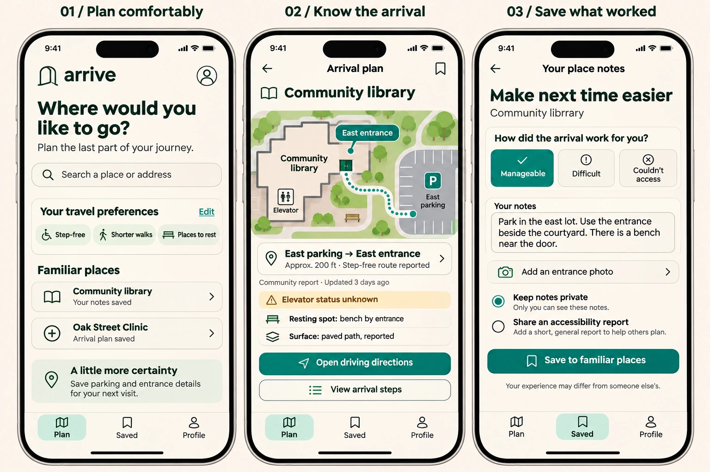

ARRIVE / ACCESSIBLE TRAVEL CONCEPT / 2026
Getting there includes getting inside.
A personal arrival guide for the journey from parking to the right entrance—designed around comfort, confidence, and choice.


- Focus
- Product strategy, mobile UX, and inclusive design
- Core journey
- Plan an arrival, find the entrance, save what worked
- Status
- Early design exploration; not built or user-validated
The address is only part of the journey.
For someone with a temporary injury, limited mobility, chronic pain, or fatigue, the distance between a parking space and an entrance can shape the whole visit. Stairs, slopes, unclear entrances, and uncertain elevator access introduce questions that a street address cannot answer.
Arrive explores a focused design question: how might people understand the last part of a journey before leaving home, then preserve what they learn for next time?
A personal arrival plan
The central object is a reusable guide connecting a destination, parking or drop-off point, entrance, and the path between them. Each guide separates sourced information, community reports, private notes, and unknown conditions.
- Plan comfortably
Choose a place and practical preferences: avoid stairs, shorten the walk, or find resting spots.
- Know the arrival
Compare parking and drop-off options, then follow landmarks and entrance photos.
- Save what worked
Keep personal notes and photos, with a separate choice to share a community report.
Design for today’s needs.
Preferences describe the journey rather than a diagnosis. A person can request a shorter walk today without creating a permanent medical profile. The concept would allow temporary trip preferences alongside saved defaults.
Explain tradeoffs instead of assigning an accessibility score.
A closer garage may depend on an elevator whose status is unknown. A longer outdoor path may be reported as step-free. Showing those facts lets people judge suitability for themselves; no route is presented as universally accessible.
Make uncertainty visible.
The arrival screen includes a community report date and an explicit “Elevator status unknown” notice. A venue-provided fact would have its own source and confirmation date. Conflicting or outdated reports would need review rather than a blanket verification badge.
Support independence through user control.
Personal notes remain private by default. Sharing an accessibility report is a deliberate choice. The proposed location experience would begin only when someone starts an arrival session, helping them save a parking location or return to their vehicle.
The experience avoids rankings, streaks, and pressure to walk farther. Choosing a drop-off point, changing plans, or deciding a route is unsuitable are all valid outcomes.
Start with clinic arrivals in one local area.
A first pilot would focus on outpatient appointments: choose parking or drop-off, find the correct entrance, and return to the vehicle. A small set of carefully documented destinations would make information quality easier to assess before expanding.
The proposed first version includes arrival options, entrance photos, short instructions, source dates, visible unknowns, downloadable guides, private notes, and a way to report changes. Continuous background tracking and automated accessibility claims are outside that initial scope.
What needs validation
This concept has not yet been tested with users or venue partners. Research would begin with people who experience mobility barriers and those who support their journeys.
- Planning: Can participants choose a suitable arrival option and identify missing information?
- Wayfinding: Do photographs and landmarks help them find the intended entrance?
- Trust: Can participants distinguish confirmed facts, reports, personal notes, and unknowns?
- Repeat visits: Does a saved guide make the next visit easier to prepare for?
Proposed measures include successful entrance finding, missed barriers, reported confidence, and ease of reusing a guide. Walking speed and distance would not define success.
The opportunity
Arrive’s intended value is a growing collection of places someone knows how to reach comfortably. The next step is to test manually prepared arrival guides with a small group before investing in routing infrastructure. Trustworthy place information and an interface accessible to its intended users are foundational requirements, not outcomes already achieved.